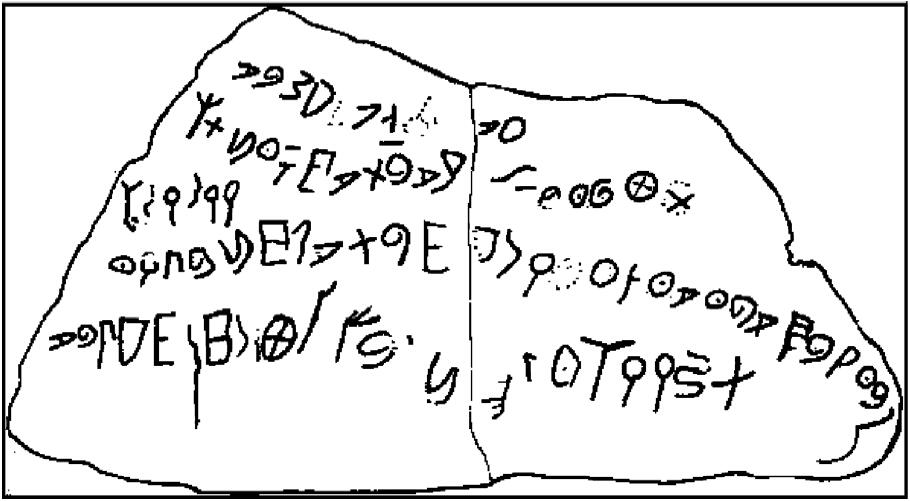

虽然有的学者承认，这些历史记载了领地范围内的亲属关系，但他们普遍不愿把这些社会称为民族。最主要的反对意见坚持认为，前现代社会里绝大部分人不可能参与一种共同的文化。这种观点认为前现代社会的文化无论在纵向还是横向上都是支离破碎的：纵向层面上存在着人们受教育程度的巨大差距；横向层面上，文化程度低的群体中，人们的观念信仰在不同的地方也有很大差别。因此，他们还认为这些社会的统治中心与文化上处于封闭状态的偏远地带之间，有着强烈的文化差异和（由于缺乏享有民主的公民参与政治这一现代理念）政治差异。根据这些差异得出的结论是，这些前现代社会并非民族共同体。因此，他们坚持认为，领地内的民族共同体必须基于不断发展的、促进文化统一的因素，如现代通讯、公共教育、广大领地内整齐划一的法律制度和享有民主的公民。
如有人所述的，这一论点有一定的价值。现代化的发展使民族文化有可能展现更多的连贯性和稳定性。我们使用的“民族”一词似乎暗含着这种连贯和稳定，把民族与似乎更模棱两可的前现代社会，比如古代近东的阿拉姆人、汪达尔人、阿瓦尔人和中世纪早期的巴达维亚人区别开来；这些社会也许可以归类为“族群”。
然而，对显然在近代历史上出现的民族所做的结论面临两大难题。第一个难题是现代化的发展也有助于稳固并延续对民族共同体有削弱作用的其他文化群体。这一难题发生在两个层面：一个在民族“之下”，另一个则在民族“之上”。现代通讯和公共教育模式明显促进了原本的多元人口在文化上的统一，使之成为现代民族。但这些模式也使地域文化——尤其是有自己语言的文化——得到稳固和加强，而这种“地域主义”可能导致新的民族出现。在21世纪初的欧洲就可以看到这种可能性，如斯洛伐克和捷克共和国；还有各种要求地区自治的呼声，如英国的苏格兰、西班牙的尤兹卡迪和卡塔兰，以及法国的科西嘉岛。这些现代的、促进文化统一的因素赋予帝国传统以新的活力，因而也同样导致了民族“之上”的、可能削弱民族势力的发展变化。例如，欧盟的出现使得欧洲人权法院这样超越了民族界限的机构得以建立。
第二个难题涉及对前现代社会更细致也更准确的评价。可以肯定，古代世界宗教——尤其是佛教、基督教以及后来的伊斯兰教——的传播让我们怀疑，那些常被认为几乎还没开化的群体之间的文化究竟在多大程度上仍处于封闭状态。我说“被认为”是因为很多古代社会其实都有相当高的文明程度，公元前7世纪的古代以色列在很大程度上就是一个文明社会。考古学家的确在一个古代村落中发现了一件陶器，上面显示早在公元前12世纪就有人尝试使用“希伯来文前身”字母表中的字母了。
古代世界宗教的传播说明，即便在没有批量生产的书籍报纸、没有铁路和工业产品市场的情况下，广泛的关系仍可以在众多人口以及遥远的地域之间建立起来。而且，自远古时期和中世纪以来，法律条文和界限清晰的领地观念就一直存在。古代和现代的民族关系在历史上并无巨大差异；这两个时期的观念信仰都有着极其复杂的彼此重叠，而二者表面上的差异往往让人无法正确认识到这一复杂情况。尽管很难清晰地描述民族共同体的发展状况，一些前现代社会仍呈现出它的发展态势。我们再仔细看看所举的四个例子中的更多细节是如何说明这一发展状况的。

图8 写在陶器上的“希伯来文前身”字母表中的80个字母（自大约公元前1100年），1976年发现于伊兹伯特萨尔塔